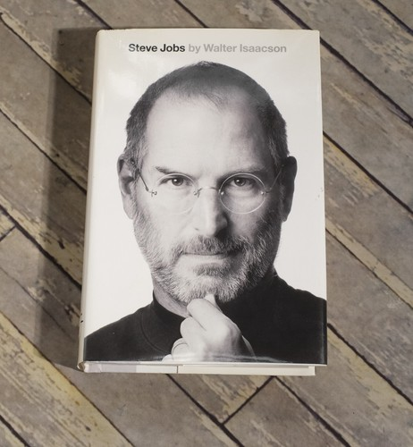

Why Did Xerox PARC Fail?
They Invented Modern Computing, Then Gave It Away
📜 What Happened
Xerox's research lab invented the graphical interface, the mouse, ethernet, laser printing, and WYSIWYG editing — the complete modern computer, working, in 1973. Headquarters, 3,000 miles away and obsessed with copier margins, couldn't see it. In 1979 they gave Steve Jobs demo access in exchange for pre-IPO stock. Jobs: 'They had no idea what they had.' The Macintosh was born from that tour; Xerox stayed a copier company.
☠️ The Fatal Mistake
The future was in the building and leadership never walked down the hall — innovation without leadership attention is a donation to competitors.
🧠 The Lesson (Free for You)
Inventing it means nothing; commercializing it means everything. Companies don't die from lack of ideas — they die from the distance between the lab and the boardroom.
📕 The Antidote Book

Isaacson interviewed Jobs over forty times — plus a hundred friends, enemies, and colleagues — with no topic off limits and no approval rights. The result is the definitive portrait of tech's most consequential…
📖 OPEN THE FULL INTERACTIVE BREAKDOWN →Searchable, filterable, free forever — they paid billions; your lesson is free.